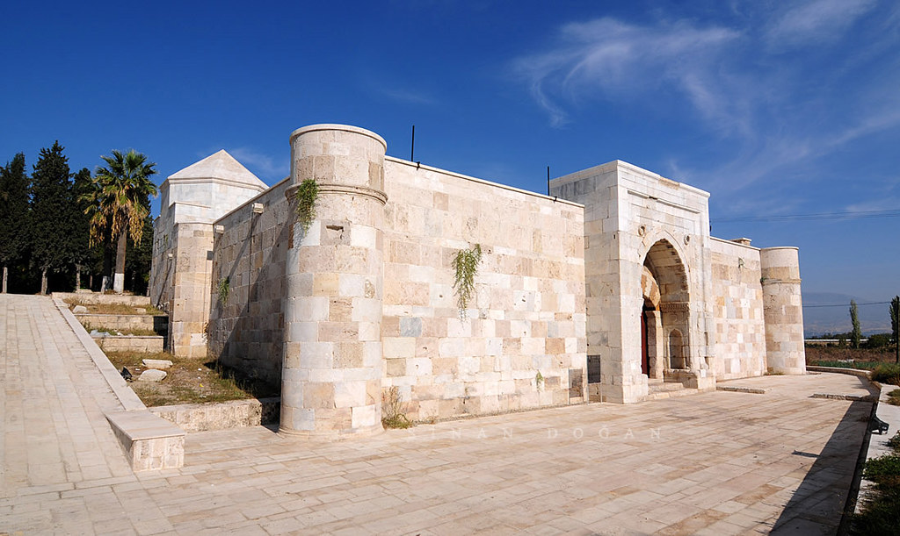

Anadolu Selçuklularının batıdaki son kervansaraylarından olan ve iki kitabesi bulunan Akhan Kervansaray sultan hanları şemasına uymakla beraber, oldukça küçük bir handır. Han'ın iki kitabesi bulunmaktadır. Kapalı olan kısmı 1253 (H. 651) yılında, avlu 1254 (H. 652) de tamamlanmıştır. Yaptıran Vali Seyfettin Karasungur bin Abdullah'tır. Kitabede II. İzzettin Keykavus'un adı geçmektedir. Simetrik bir plan göstermeyen kervansaray açık ve kapalı bölümlerden oluşmaktadır. Toplam 1.100 m2'lik bir alan üzerine oturmakta olup, kare bir avlu ve derinlemesine dikdörtgen bir holden oluşmaktadır. Kapalı mekan derinlemesine iki sıra paye ile üç sahına ayrılmıştır. Ortada bulunan sahın yan sahınlardan daha geniş ve yüksek tutulmuştur. Üst kısım tonoz ile örtülmüştür. Sivri kemerli niş biçiminde portali, basık kemerli giriş kapısı ile yarım metre dışa taşmıştır. Üzerinde bulunan kitabesi ile oldukça sade bir görünüşe sahiptir. Kapalı mekanın simetrik düzenlemesine karşın avluda asimetrik bir plan karşımıza çıkmaktadır. Avlu girişinin sağ tarafındaki bölümde, iki katlı mekanlar, bir eyvan ve iki kapalı birim yer almasına rağmen, diğer tarafta revaklar ve kapalı mekana bitişik tonozlu iki mekan yer almaktadır.
Daha fazla bilgi için tıklayınız19. yüzyıl sonlarında inşa edilen müze binası, cumhuriyetin ilanından sonra parti binası olarak hizmet verdi. 4 Şubat 1931'de şehre gelen Mustafa Kemal Atatürk, binada bir gece kaldı. 1950'lerden itibaren bina Sağlık Bakanlığı tarafından verem savaş dispanseri olarak kullanıldı. 1977'de Kültür Bakanlığı binayı anıt eser olarak tescil etti. 1981-1983 yılları arasında onarımdan geçen bina, 1 Şubat 1984'te müze olarak ziyarete açıldı. 1997 sonunda bir kez daha onarıma girdi ve 4 Şubat 1999'da yeniden açıldı. 2018'de müzeyi yaklaşık otuz bin kişi ziyaret etti.
Daha fazla bilgi için tıklayınız